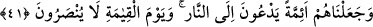
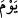

40. Biz de onu ve askerlerini yakalayıp denize atıverdik. Bak işte, zalimlerin sonu
nice oldu!
Küfür ve azgınlıkta son sınıra ulaştıklarında “Biz de onu ve askerlerini yakalayıp”
cezâ olarak “denize atıverdik.” Yâni onları Kızıldeniz’de boğduk. “__WORD__; bir şeyi,
önemsiz olduğundan dolayı atmak ve uzaklaştırıp baştan savmak anlamına gelir.
Ey Muhammed, kalb gözünle “bak işte, zâlimlerin sonu,” âkıbeti “nice oldu!”
Kavmini, onların âkibetine uğramaktan sakındır.
41. Onları, (insanları) ateşe çağıran öncüler kıldık. Kıyamet günü onlar yardım
görmeyeceklerdir.
Firavun ve kavmini, kendi dönemlerinde“onları, (insanları) ateşe,” cehenneme
“çağıran öncüler kıldık.” Yâni küfür ve günahlara sevkeden dalâlet ehlinin kendilerine
tâbî olduğu ve böylece hem kendilerinin ve hem de başkalarının günahlarını yüklenen
liderler yaptık.
“Kıyamet günü” azâb hiçbir şekilde onların üzerlerinden kalkmaz; “onlar yardım
görmeyeceklerdir.”
42. Bu dünyada arkalarına lânet taktık. Onlar, kıyamet gününde de kötülenmişler
arasındadır.
“Bu dünyada arkalarına lânet taktık.” Yâni rahmetten mahrûmiyet ve uzaklaştırma
cezâsına uğrattık. Melekler ve müminler nesilden nesile onlara lânet okumağa devam
ederler.
“Onlar, kıyamet gününde de kötülenmişler” çirkinleştirilip koğulmuşlar ve rahmetten
uzaklaştırılmışlar “arasındadır.”
“__WORD__ (gün)” zarfı; “__WORD__ (kötülenmişler)” kelimesine müteallıktır. Başındaki elif
lâm, tarif içindir; “__WORD__ mânâsına değildir. Bu kelime; koğulmuş, uzaklaştırılmış
mânâsına gelir. “__WORD__ (Allah falanı çirkinleştirsin)” demek, Allah onu her türlü
hayırdan uzaklaştırsın, anlamına gelir. İsm-i fâili “__WORD__ şeklinde gelir. (Yani, bu fiilin